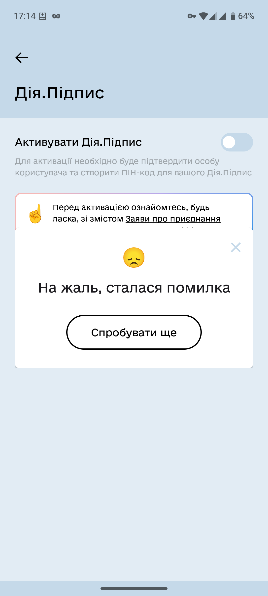

Пов’язане
AdBlock
Apple
Facebook
Google
Microsoft
Telegram
Tesla
TikTok
Windows
Word
Zoom
Банки
Біометричні дані
Китай
Лікарні
Місконфігурація
Розпізнавання облич
Розумні девайси некруті
Додатки загалом
Дуже багато додатків, більше 1000 (ігри типу Candy Crush чи Subway Surfers, додатки для знайомств типу Tinder, інші додатки: для молитви, для вагітних тощо)
Зливали дані про георозташування через частинку коду для реклами та продавали
(але часто через ip адресу)
Тож, напевно, навіть розробники про то не знали
мільйони пристроїв злиті рекламодавцям
посилання
Додаток “Parental control - Kids place” могли використовувати не тільки батьки для контролю та стеженням за дітьми, завантаження файлів і тд
посилання
Інший додаток Life360 продавав таку інформацію своїх користувачів
посилання
Влада
Цифровізація
Отримали доступ до клієнтів компанії з розробки застосунків для державапарату США
посилання
Китайські хакери роками мали доступ до якихось даних (ймовірно, багато яких) про активність користувачів ледь не всіх телекомунікаційних провайдерів США
Кажуть, що краще тепер всім користуватися зашифрованими додатками - тож скоріше за все Китай має доступ і до прослідковування трафіку, запитів, потенційно і до місцерозташування користувачів
А використали вони бекдор американської влади, яким ті за своїми громадянами стежили
посилання
Норвезький уряд взламали
Посилання
У Швеції настільки повсякденним став BankID (його треба на багатьох сайтах, і ти вже звик його використовувати), що з’явилося багато скамів, де його використовують, але одразу списують всі кошти
За 2023 рік онлайн видурили десь 100,000,000$ - удвічі більше, ніж у 2021
посилання
В Індії вкрали дані про паспорти, адреси, номери телефонів тощо посилання
В Індії вкрали біометричні дані з сайту правління, використовували для подальших крадіжок
посилання
У Туреччині взламали державний сайт та отримали доступ до:
посилання
- Номерів телефонів
- ID номерів
- Членів сім’ї
- Адрес проживання
- Інформація про нерухомість
- Інформація про освіту
У Казахстані злили дані майже про всіх дорослих
посилання
- номери телефонів
- індивідуальні ID
- адреси
- дати народження
Масове стеження не допомагає
Масове стеження за громадянами не допомагає в боротьбі проти терористичних атак
посилання1
посилання2
+Купа камер в містах не зменшує злочинність. У Мемфісі так узагалі збільшилася
посилання
Стеження в школах (камери і все таке) не запобігають (деколи навпаки сприяють) булінгу, розстрілам і всякому такому
посилання
Зловживання
Польща сказала, що використовувати Pegasus незаконно
Каже, що використання владою проти опозиції зробило значний вплив на вибори 2019
Тобто такі речі підривають принципи демократії
посилання
Американські органи (імміграції, кордонів тощо) мали би подавати заявку кожного разу, коли треба дані про людей, як-от місцезнаходження. Натомість вони просто купували (в чогось типу Google) й обходили правила. При цьому використовували не тільки для дослідження злочинів, а й просто, наприклад, для стеження за співпрацівниками
посилання1
посилання2
У ВБ збирали твіти й іншу активність викладачів та бібліотекарів, які виступали проти того, як працює зараз система (мало грошей на школи, не дуже круті закони тощо)
Потім навіть намагаються скасовувати конференції, де вони беруть участь, та забороняти їхні виступи
посилання
У Данії адміністрація з податків мала прогу для визначення “надійності” тих, хто подавалися на підтримку для догляду за дітьми, але вона одразу давала статус типу “ненадійного” іноземцям, людям іншої національності. Через це навіть маленькі опечатки сприймалися як бажання зробити злочин, тому батьків штрафували. Потім, коли все вияснилось, владу оштрафували, а уряд звільнився, але люди все одно постраждали
посилання1
посилання2
У Мексиці картелі мали доступ до програм (які по ідеї лише для влади, поліції і тд), щоб у реальному часі слідкувати за геолокаціями противників, діставати собі документи тощо. Так вони мали більше можливостей позбуватися опонентів та вибілювати себе посилання
Використовують вже як мінімум 6 років
У Франції заблокували доступ до TikTok в Новій Каледонії, коли там почалися протести (паралельно з військовим втручанням та вбивством і пораненням протестувальників)
посилання
Україна
Взламали реєстри Мін’юсту України
Видалили дані та скоріше за все собі теж прихопили
Там було:
- Реєстр цивільних актів
- ФОП і юридичних осіб
- Прав на нерухомість
посилання
Дані 2 млн українців на дарк вебі. Токени збігаються з токенами (які генеруються з імені та id) в дії
З’явилися після кібератаки 13-14 січ 2022 року на державні сайти
Був навіть сайт, де можна було глянути за своїм токеном (який з інструментів розробника на сайті дістаєш), чи ти є в 100,000 семплі
Багато паспортів після 2020 року (як мінімум 6,6 тис з 100 тис семплу), але влада каже, що це все взагалі не з Дії, а збірка раніше злитих даних до 2019 року (а токени та паспорти після 2020 не пояснюють, звідки у зловмисників)
Серед даних:
- телефон
- ПІБ
- ІПН
- адреса
- серія, номер паспорту, дата видачі, назва органу, який видав
- номер та дата видачі ID картки
- ID
Є також дані про запити в “єМалятко” та квитанціями про оплату
посилання
На момент написання тієї статті 1418 людей перевіряли себе в 100,000 семплі через той сайт, і 54 себе знайшли
Федоров казав, що роль кібербезпеки переоцінена, і хвалився, як звільнив команду захисту і кілька місяців взагалі без будь-якої тримав міністерство
посилання
Дослідник повідомив CERT-UA (команду з відповіді на надзвичайні комп’ютерні ситуації) про відкриту базу даних скани паспортів, ІПН, права, реєстрації авто (зазвичай там пов’язані люди з перевіркою стану авто при продажі - на СТО), але його ігнорували три роки
Він звернувся до журналістів, і Держспецзв’язку (наглядач CERT-UA) сказало, що то відповідальність Міністерства цифрової трансформації, і ті сказали що то не їхня відповідальність
Міністерство розвитку громад та територій, яке надає ліцензії СТО, сказало що вони йому не звітуються
Але через кілька днів базу хтось тихенько прикрив - тобто хтось таки міг на це повпливати, але нічого журналістам та досліднику не сказав
посилання
Резерв+ через пів року після запуску все ще якісь випадкові повідомлення test-test приходять
А також не можна було кілька днів зайти в акаунт
посилання
Ще через місяць знову стався збій, і не можна було залогінитися та користуватися функціоналом
посилання
Знову впав резерв+
посилання
Всі сервери Дії (а ще Нової Пошти та деяких банків) запущені на одному датацентрі, який впав
посилання
Дія не те щоб теж нормально працювала: постійно видає помилки:

{width=150px}Всякі штуки з війною в росії
Пенсіонерку оштрафували, а потім посадили за антивоєнні дописи в соцмережах (її брат опинився під завалами у Дніпрі)
посилання
Стримерку посадили за зачитування спогадів людей з Бучі
посилання
Історії
Власник рекламної компанії розказує, що мають доступ до того, що читає, дивиться конкретна людина; з ким мешкає, на кого підписана, що купує, що купують її діти, чому вони це купують, які в них труднощі в житті тощо
Мають таке на 91% людей
посилання
Додаток магазину Target давав більші ціни, якщо ти знаходився біля їхнього магазину фізично, менші якщо біля магазину конкурентів;
В залежності від країни(по IP) різні ціни на готелі. Напр для пакистанців більші ціни, для американців менші. Також для німців дорожче;
Відомий курс з підготовки до SAT(як ЗНО в США) ставив вищі ціни азіятам(мешканцям азійський районів. Люди там переважно бідніші, але мають високі цінності освіти);
Деколи бувають вищі ціни на комп’ютері, ніж на телефоні;
Якщо кілька разів дивитися один і той же політ, деякі авіакомпанії підвищують ціни;
Travelocity ставив на $50 вищі ціни користувачам Chrome;
Користувачам макбуків туркомпанія підсовувала дорожчі готелі ще плюс це посилання;
Менше реклами жінкам про роботи з більшою оплатою;
посилання
Жінку засудили за те, що вона показала всім, що російські гакери були причетними до виборів
посилання
Чоловіка в Саудівській Аравії засудили за критику влади на твіттері
посилання
Провайдер давав ровтери з можливість віддаленого керування провайдером (а раптом користувач сам не розбереться - треба в разі чого допомогти)
Був спосіб будь-кому керувати ровтером
посилання
Чотири мобільні мережі продавали геолокації користувачів
посилання
Поліція в Огайо збирає інформацію (через відеостеження та ідентифікацію номерних знаків машин) про пересування машин
Але водночас погано зберігала, і можна було просто так будь-кому попросити дані будь-кого
посилання
Україна
Поліцейські Львова за гроші прослуховували телефонні розмови
посилання
Слідча Сихова за гроші прослуховувала телефоні розмови
посилання
Дослідження
Можна купити інформацію про людей з психічними захворюваннями, деколи включно з іменами й адресами
Найменше - 275$/5000 людей(5.5 цента(2 гривні) за людину)
посилання